Drawchange is an Atlanta based non-profit whose goal is to use the arts and art therapy to
increase the self esteem and critical thinking skills of children to help them better
deal with life’s stressors.
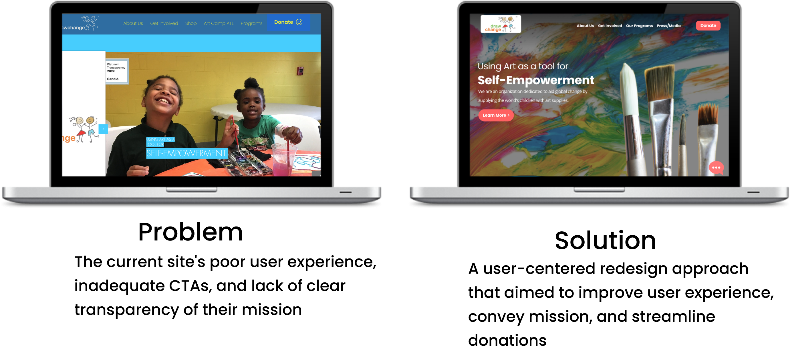
My Role
Information Architecture, User Research,
Heuristic Analysis, Interaction Design, Prototyping,
User Testing
Team
James Diaz
Nick Kaye
Olena Kulbaba
Elizabeth Kilgore
Vincent Radford
Tools Used
Figma
Mirro
Adobe CC
Research Methods
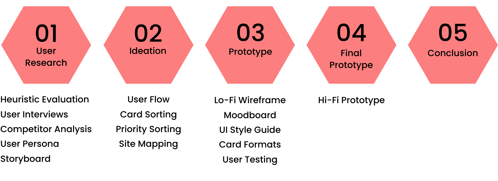
Step 01
User Research
Heuristic Evaluation
A Heuristic evaluation was performed, which identified several usability issues. These included
unclear and confusing labels, poor CTAs, inadequate color contrast ratios,
and text-heavy pages.
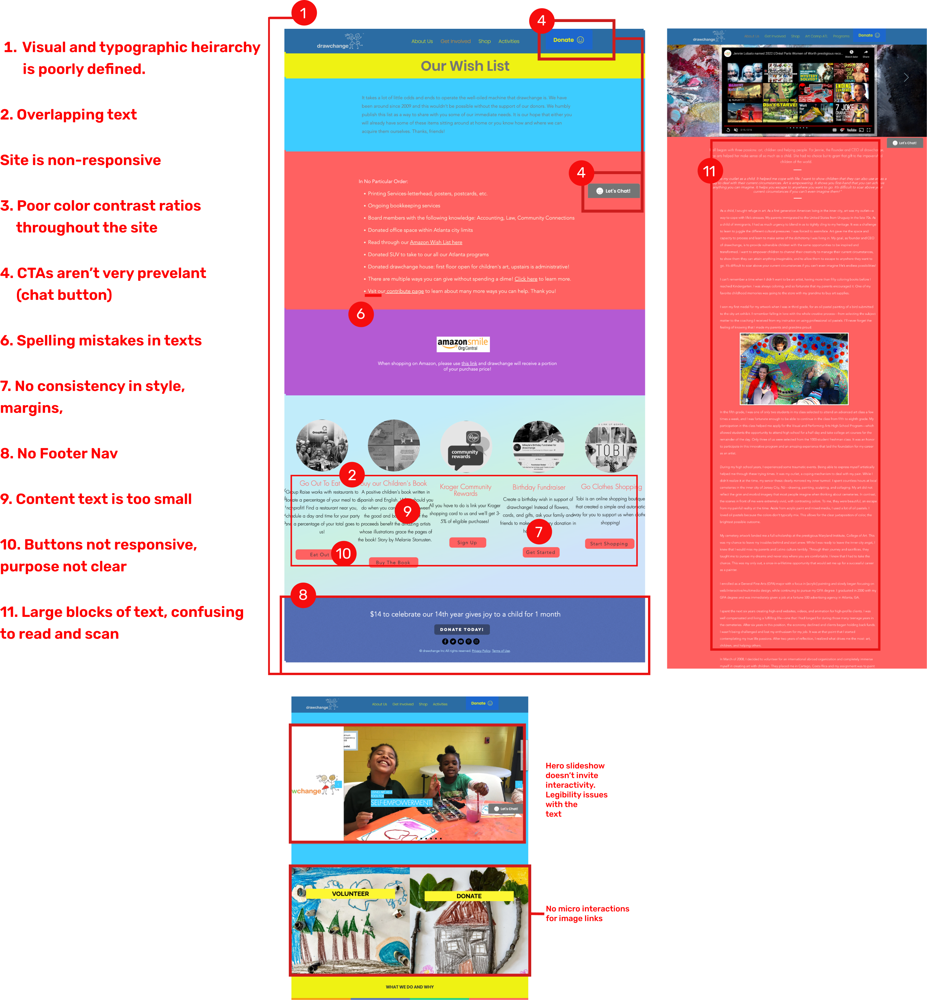
Competitors Analysis
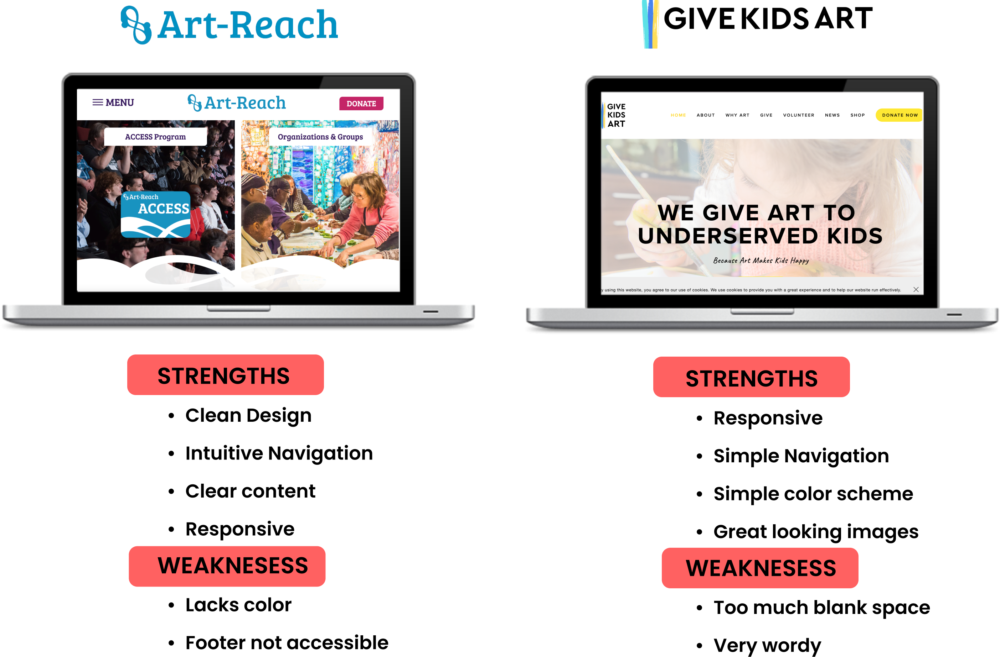
Research Question
What are the motivations and priorities for people
who want to volunteer with or donate
to a charity/nonprofit?
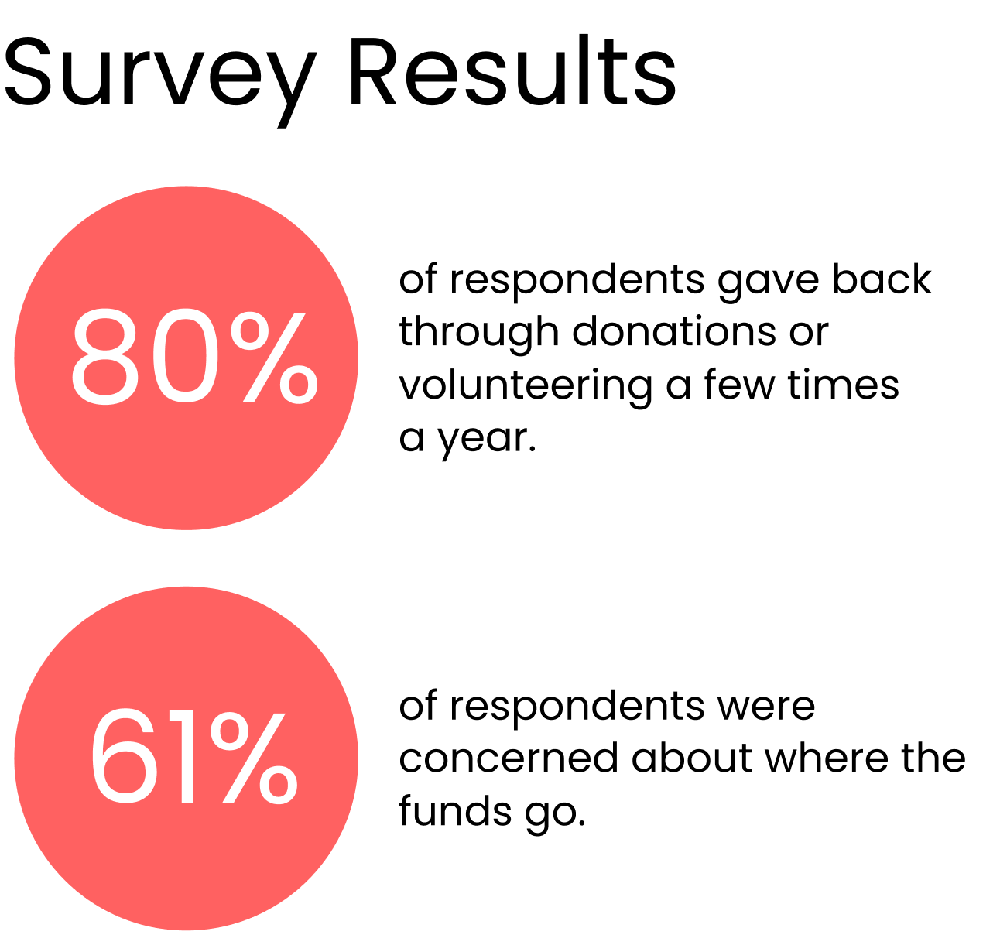
User Interview Insights
People are most likely to donate to a
non-profit if:
It is clear how the funds are used
They can see how someone directly
benefits from the organization
People are least likely to donate to a
non-profit if:
It is a large corporation asking
There are bad reviews of the organization
It is not clear what the organization does
User Persona
Following our user interviews, we synthesized our findings
and were able to create this user persona.
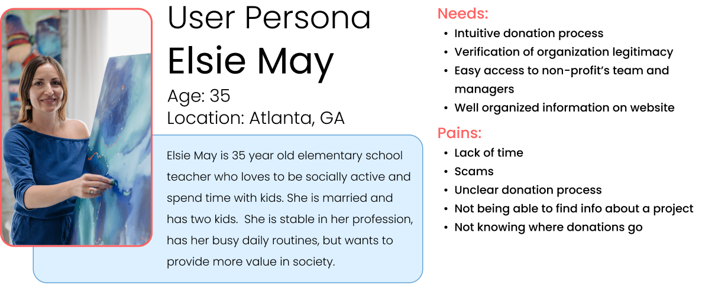
Storyboard
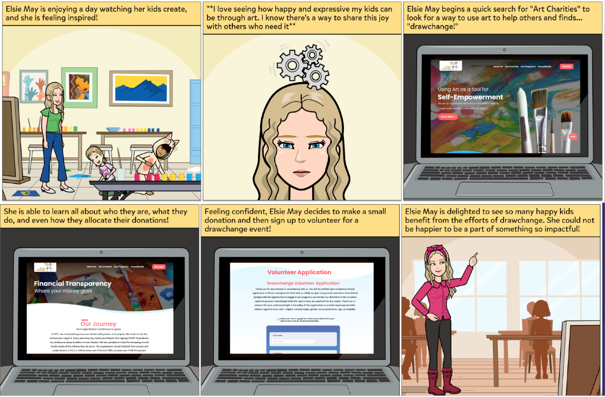
Step 02
Ideation
User Flow
This flow represents the pages users would most
likely visit according to our findings in our user research.
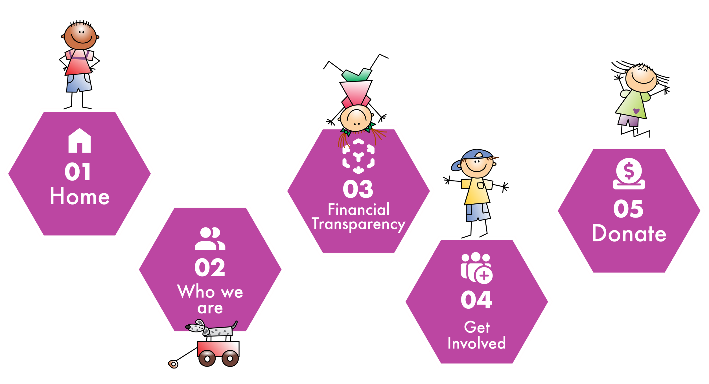
Priority Sorting
A priority matrix was made emphasising changes to the visual and typography
heirarchy as well as guiding the user to the information most
important to them.
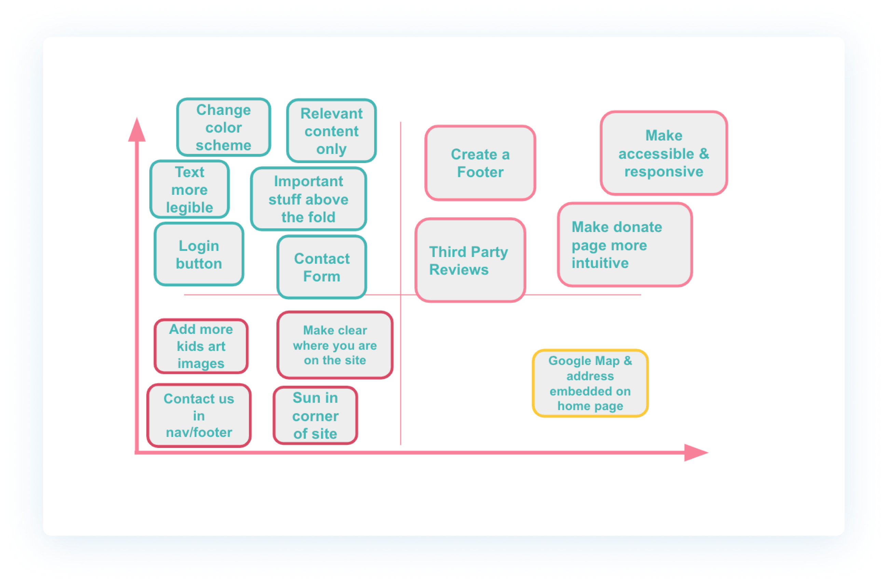
Revised Sitemap
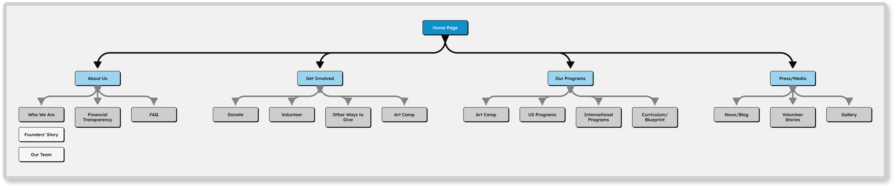
Step 03
Prototypes
Wireframe Sketches
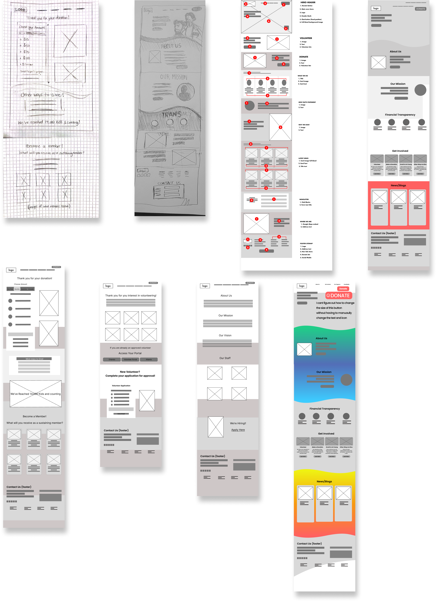
User Testing
Users tested out our lo-fi designs and gave feedback
on their experience navigating We iterated our designs
based upon this feedback and made improvements on
the Visual and topographic hierarchy, improved and
relevant micro-interactions and employing the “chunking”
method for easier scanning
Moodboard
We used various inspirational images and textures that capture the look and feel
of we wanted to convey with the new design direction of Drawchange.
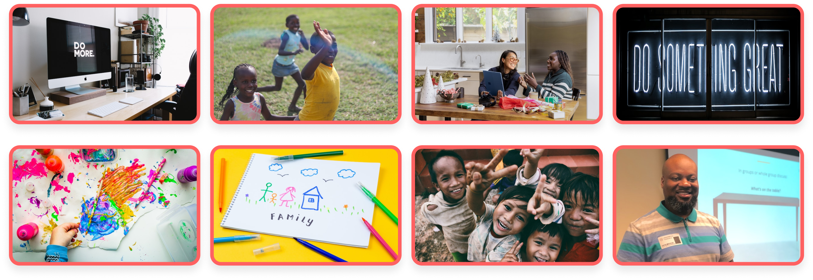
UI Style Guide
We began designing a style guide that reflects the creative
vision and aesthetic direction established by the mood board.
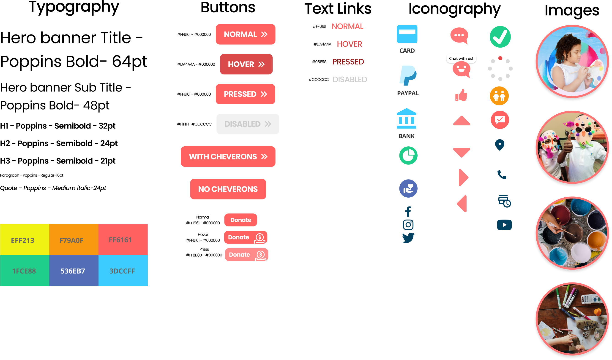
Card Methods
Various card formats were created and used throuhout the site to help organize
information into digestible chunks and avoid cognitive overload.
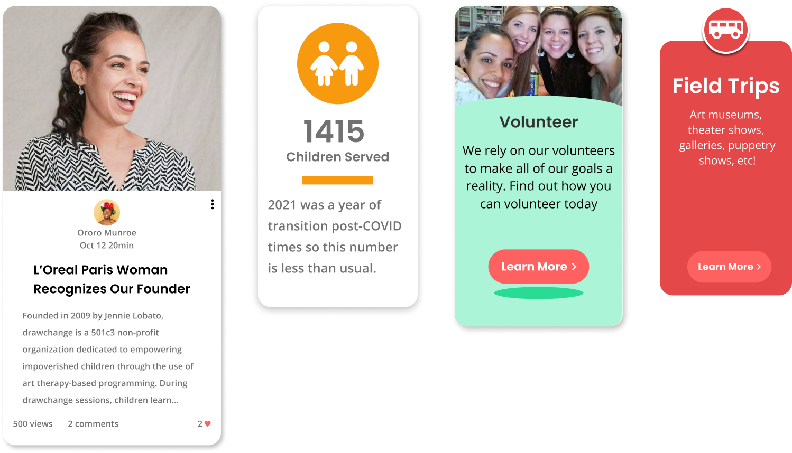
Step 04
High Fidelity Prototype
Explore the Prototype
About the Prototype
Not everything in the prototype is clickable
The clickable elements will flash blue if you click on a non-clickable item.
Pressing the letter 'R' on your keyboard will take you back to the beginning.
Forms and fields do not work with keyboard input.
Step 05
Conclusion
Key Takaways
During this process we learned just how much the proper use of Visual elements not only make the site “look” better, but it also plays a vital role in making the user experience better by creating a visually appealing and cohesive interface that enhances usability and increases user engagement. It can help to guide users to key features and actions and improve accessibility through the use of color, typography, and layout.
Due to time constraints, we were unable to explore a mobile version of the site and there were plans on more micro-interactions throughout the site.
We also really learned about the story behind the organization and the inspiring story of its founder. We were definitely inspired by all the good this relatively small organization is spreading across the world and we would have loved to worked with her firsthand, but unfortunately that didn’t work out.
 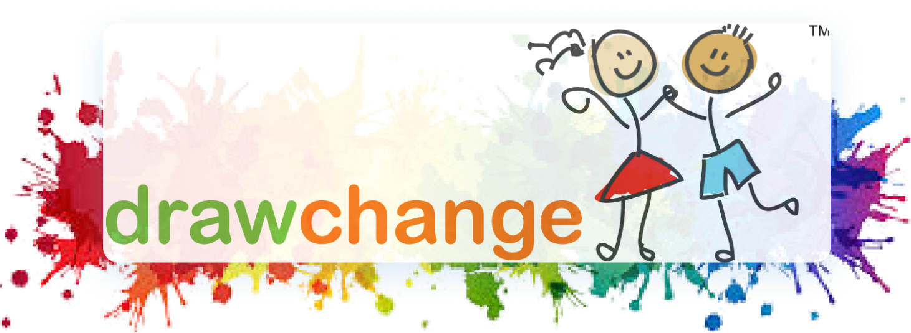
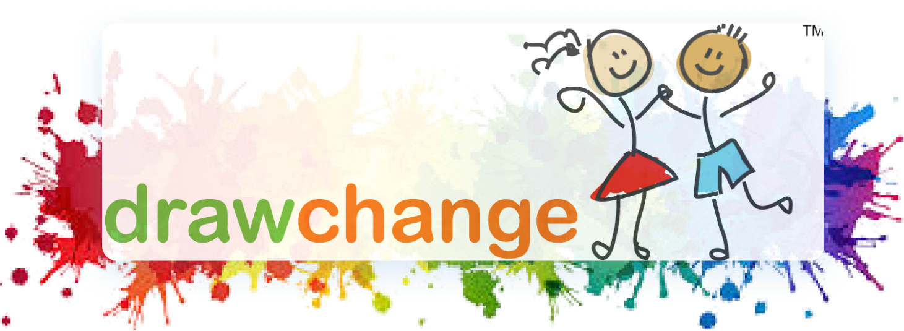